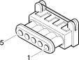

M15C Plug preheating control unit ( ENGINE )
- Path
- Electrical equipment > Connectors > M Intermittent and timed electronic devices,.. > M15 Plug preheating control unit > M15C Plug preheating control unit ( ENGINE )
- Kind
- connector pinout (pin -> wire colour -> other end)
- Applies to
- engines: 3.2 V6, 1.9 JTD 8v , 2.4 JTD 10v; production: da 02/01 a 02/02, da 03/02 a 09/03, da 10/03
- Interactive page
- https://sloeber94.github.io/elrnDB-a156/en/#/3236850
Applies to: engines: 3.2 V6, 1.9 JTD 8v , 2.4 JTD 10v; production: da 02/01 a 02/02, da 03/02 a 09/03, da 10/03

Wiring | Colour |
|---|---|
NERO (black) |
Topics linked from this page (5)
- 50 ENGINE
- D4 Front/engine connection
- K41 Air flow meter
- L30 EGR solenoid
- L62 Butterfly casing solenoid valve
Topics that link to this page (21)
- B98A Supplementary fuse box ( FRONT )
- B98A Supplementary fuse box ( FRONT )
- C10A Front left earth ( FRONT )
- C15 Facia earth, driver's side ( FRONT )
- D4 Front/engine connection ( FRONT )
- D4B Front/engine connection ( ENGINE )
- D4B Front/engine connection ( ENGINE )
- D4 Front/engine connection ( ENGINE )
- D4 Front/engine connection ( ENGINE )
- J17 Diesel preheating relay ( FRONT )
- K31 Water in diesel filter sensor ( FRONT )
- K41 Air flow meter ( ENGINE )
- L30 EGR solenoid ( ENGINE )
- L62 Butterfly casing solenoid valve ( ENGINE )
- M10A Engine management ECU ( ENGINE )
- M10A Engine management ECU ( FRONT )
- M10A Engine management ECU ( FRONT )
- M10A Engine management ECU ( ENGINE )
- M10B Engine management ECU ( ENGINE )
- M10C Engine management ECU ( ENGINE )
- M15C Plug preheating control unit ( ENGINE )